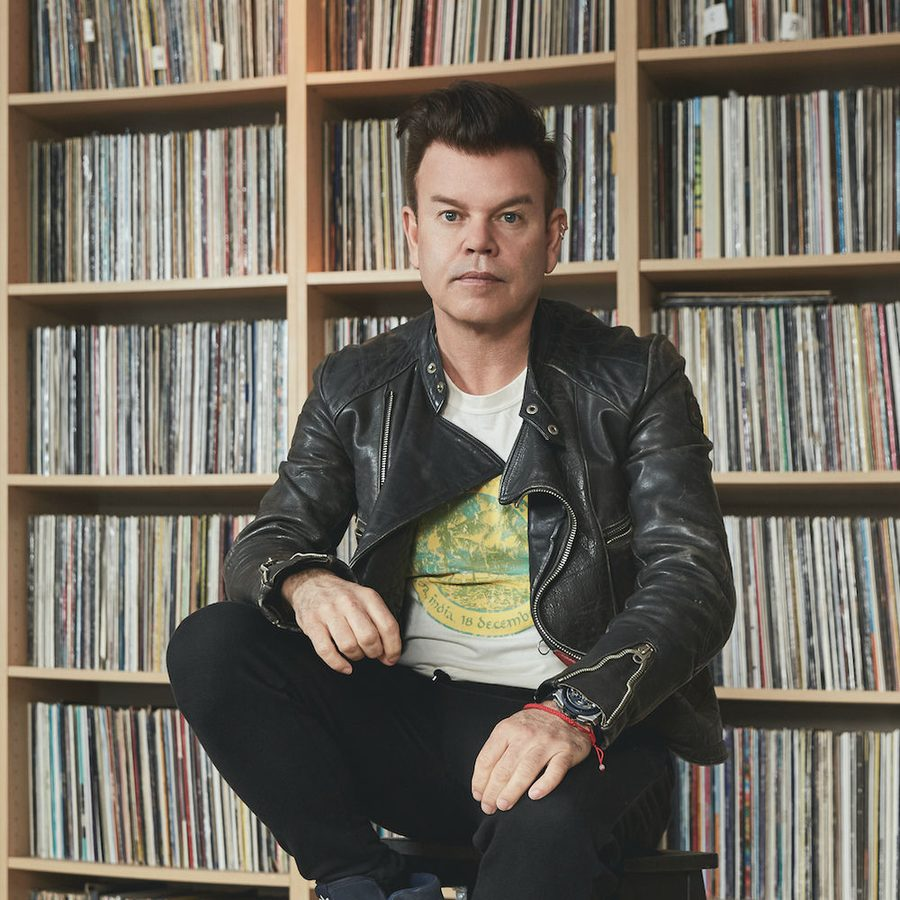

Paul Oakenfold [Audio]: Coming to you direct from Vegas, baby


STREAMING AUDIO INTERVIEW
It’s been a fair few years since we last saw Perfecto Records high-roller Paul Oakenfold in Australia, but in 2009 the big man of dance music has more sway and influence than ever before. Now permanently stationed in the US of A, the one we know as ‘Oakie’ has well and truly conquered the land that’s otherwise kept its back turned on clubbing culture. Grammy nominations. Soundtrack work for Hollywood films. His music featured in big-budget ads. But more indicative than anything else of his larger-than-life stature is his residency in Las Vegas, at the superclub Rain.
“The night is called Planet Perfecto and the DJ booth is the control tower, the Starship Enterprise,” Oakey enthused last year. “There is nowhere in America other than Las Vegas that I would want to be a resident DJ,” he told the world on a full-page advert in Pacha’s Ibiza magazine. “It is the world’s oyster, and the Perfecto nights at Rain are going to take clubbing to a whole new level.”
However, in a couple of weeks time, Oakenfold will be stepping down from his DJ console in Las Vegas and stepping up behind the decks as one of the headliners on the Future Music Festival tour across the country. ITM’s Angus Paterson speaks with the Las Vegas resident himself as the beginning of the tour draws near.
Paul Oakenfold tours with Future Music Festival…
Sat 28th Feb – Future Music Festival Sydney
Sun 1st Mar – Future Music Festival, Perth
Sat 7th Mar – Future Music Festival, Brisbane [Buy Tickets]
Sun 8th Mar – Future Music Festival, Melbourne
Mon 9th Mar – Future Music Festival, Adelaide
Want a taste of the Las Vegas experience that Oakie will be bringing to Future Music Festival? Check out the clip below…